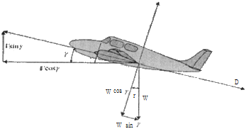
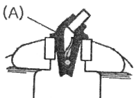
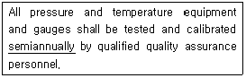
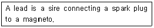
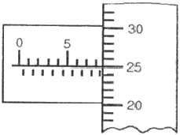
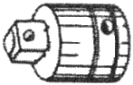

항공기관정비기능사 (2012-07-22 기출문제)
1과목: 비행원리
1. 비행기가 비행 중 속도를 2배로 증가 시킨다면 다른 모든 조건이 같을 때 양력과 항력은 어떻게 달라지는가?
- 양력과 항력 모두 2배로 증가한다.
- 양력와 항력 모두 4배로 증가한다.
- 양력은 2배로 증가하고 항력은 1/2로 감소한다.
- 양력은 4배로 증가하고 항력은 1/4로 감소한다.
(정답률: 63%)

2. 다음 중 단일 회전날개 헬리콥터가 추력의 수평성분을 얻는 방법은?
- 주 회전날개의 회전면을 기울인다.
- 꼬리회전날개의 회전속도를 조절한다.
- 꼬리회전날개의 피치각을 변화시킨다.
- 주 회전날개 전체의 피치각을 변화시킨다.
(정답률: 60%)
3. 날개끝 실속이 일어나는 이유에 대한 설명으로 옳은 것은?
- 날개 뿌리에서 공기의 흐름이 이어지므로
- 날개 끝 부근에서 경계층을 두껍게 형성시켜 에너지를 얻으므로
- 날개 끝 부근에서 공기의 흐름이 떨어지므로
- 날개 뿌리 부근에서 경계층을 두껍게 형성시켜 에너지를 얻으므로
(정답률: 86%)
4. 비행기의 착륙 거리를 짧게 하기 위한 조건으로 틀린 것은?
- 접지 속도를 크게 한다.
- 활주 중 비행기의 무게를 크게 한다.
- 비행기의 착륙 무게가 가벼워야 한다.
- 그라운드 스포일러(Ground spoiler)를 사용한다.
(정답률: 76%)
5. 조종면의 뒷전 부분에 부착시키는 작은 플랩의 일종으로 큰 받음각에서 캠버를 증가시켜 수평 꼬리날개의 효울을 증가시키는 역할을 하는 장치는?
- 혼 밸런스
- 탭
- 앞전 밸런스트
- 도살핀
(정답률: 75%)
6. 비행속도 1080km/h 로 비행하는 항공기의 마하수(M)는 약 얼마인가? (단, 비행고도에서 음속은 320m/s 이다.)
- 0.38
- 0.75
- 0.85
- 0.94
(정답률: 51%)
7. 비행기가 하강비행을 하는 동안 조종간을 당겨 기수를 올리려 할 때 받음각과 각속도가 특정 값을 넘게 되면 예상한 정도 이상으로 기수가 올라가는 현상은?
- 턱 언더
- 더치 롤
- 디프 실속
- 피치 업
(정답률: 72%)
8. 실제 공기 중에서 프로펠러 1회전 당 깃이 진행한 거리를 무엇이라 하는가?
- 유효 피치
- 산술적 피치
- 기하학적 피치
- 평균공력 피치
(정답률: 80%)
9. 그림과 같이 상승비행 중인 항공기의 진행 방향에 대한 힘의 평형식과 항공기의 날개 양력방향으로 작용하는 힘의 평형식을 옳게 나열한 것은?

- T=Wcosɤ +D, L=Wcosɤ
- T=Wsinɤ +D, L=Wsinɤ
- T=Wcosɤ +D, L=Wsinɤ
- T=Wsinɤ +D, L=Wcosɤ
(정답률: 60%)
10. 무게가 5000kgf 인 비행기가 경사각 30˚로 정상선회를 할 때, 이 비행기의 원심력은 약 몇 kgf 인가?
- 1886
- 2887
- 3887
- 4887
(정답률: 63%)
11. 세로축은 비행기의 전후축이라 하며 또한 X축이라고도 하는데, 이 축에 관한 모멘트는 무엇인가?
- 동적 모멘트
- 빗놀이 모멘트
- 옆놀이 모멘트
- 키놀이 모멘트
(정답률: 77%)
12. 공기의 기본 성질을 표현하는 물리량에 대한 설명으로 옳은 것은?
- 압력은 단위 체적당 작용하는 힘이다.
- 밀도는 단위 면적이 가지는 질량이다.
- 비체적은 단위 질량이 가지는 체적이다.
- 비중량은 단위 체적이 가지는 질량이다.
(정답률: 47%)
13. 관 내에서 일정한 유량으로 흐르는 유체의 연속 방정식에 대한 설명으로 옳은 것은?
- 관을 통과하는 유체의 밀도는 연속으로 증가한다.
- 관의 단면적이 증가하면 유체의 속도는 증가한다.
- 관속 유체의 밀도가 감소하면 속도가 감소한다.
- 관의 단면적과 유체의 속도는 반비례한다.
(정답률: 69%)
14. 고항력장치의 종류에 해당되지 않는 것은?
- 윙렛
- 제동낙하산
- 공기제동장치
- 역추력장치
(정답률: 88%)
15. 헬리콥터의 호버링 조건을 옳게 나타낸 것은?(단, 항공기의 중력W, 추력T, 양력L, 항력D이다.)
- L=w, T＜D
- L=W, T=D=0
- L＞W, D＞T
- L=T, D=L
(정답률: 84%)
16. 작업대상물의 모서리를 가공하는데 사용되는 (A)와 같은 공구의 명칭은?

- 앵글
- 평행클램프
- 클램프 바
- 샤핑 바이스
(정답률: 84%)
17. 밑줄 친 부분의 내용으로 옳은 것은?

- 매 분기마다
- 매 년
- 시기에 맞게
- 반년마다
(정답률: 77%)
18. 코일에 교류 전류를 흘려 전자유도를 이용하여 전류의 분포변화를 관찰함으로써 결함을 발견하는 비파괴검사법은?
- 침투탐상검사
- 와전류탐상검사
- 자분탐상검사
- 방사선투과검사
(정답률: 88%)
19. 충돌, 추락, 전복 및 이와 유사한 사고의 위험이 있는 장비 및 시설물에 표시하는 색채는?
- 빨간색
- 파란색
- 노란색
- 주황색
(정답률: 73%)
20. 다음 영문의 내용을 옳게 번역한 것은?(오류 신고가 접수된 문제입니다. 반드시 정답과 해설을 확인하시기 바랍니다.)

- 점화 플러그는 마그네토에 포함된다.
- 마그네토는 점화 플러그에 의해 작동된다.
- 도선은 점화 플러그와 마그네토를 연결하는 선이다.
- 처음 작동의 연결은 축전지와 마그네토 플러그에 연결된 도선에 의한다.
(정답률: 85%)
2과목: 항공기정비
21. 안전결선 작업방법에 대한 설명 중 틀린 것은?
- 3개 이상의 부품이 폐쇄된 기하학적인 형상일 때는 단선식 결선법을 사용한다.
- 안전결선의 끝 부분은 1~2회 정도 꼬아 끝을 대각선 방향으로 절단한다.
- 안전결선에 사용된 와이어는 다시 사용해서는 안된다.
- 안전결선을 신속하게 하기 위해서는 안전결선용 플라이어 또는 와이어 트위스터를 사용한다.
(정답률: 89%)
22. 최소 측정값 1/100mm인 마이크로미터로 측정한 그림과 같은 결과의 측정값은 몇 mm인가?

- 5.25
- 6.75
- 8.75
- 9.00
(정답률: 85%)
23. 산소 취급시의 주의 사항으로 틀린 것은?
- 산소 자체는 가연성 물질이므로 폭발의 위험보다는 화재에 유의한다.
- 취급장소 근처에서 인화성 물질을 취급해서는 안된다.
- 취급자의 의류와 공구에 유류가 묻어있지 않도록 한다.
- 액체산소를 취급할 때는 동상에 걸릴 위험이 있으므로 주의한다.
(정답률: 81%)
24. 세라믹, 플라스틱, 고무로 된 항공기 재료를 검사할 때 가장 적절한 비파괴검사는?
- 자분탐상검사
- 색조침투검사
- 와전류탐상검사
- 자기탐상검사
(정답률: 77%)
25. 다음 중 항공기 각 계통에서 필요한 전기배선의 위치와 통과 지점을 표시한 배선도를 수록한 기술도서는?
- WDM
- IPC
- SRM
- AMM
(정답률: 55%)
26. 항공기의 일반적인 정비목표에 해당하지 않는 것은?
- 안전성
- 정시성
- 쾌적성
- 효용성
(정답률: 86%)
27. 다음 중 그리스, 솔벤트, 페인트 등의 화재에 해당하는 것은?
- A급 화재
- B급 화재
- C급 화재
- D급 화재
(정답률: 89%)
28. 리벳을 열처리 후 작업을 할 때 까지 냉장고에 보관하고, 냉장고에서 꺼낸 다음 일정시간 이내에 작업을 수행하여야 하는 리벳은?
- 2117
- 2024
- 2119
- 1100
(정답률: 78%)
29. 기체 판금 작업시 두께가 0.2cm 인 판재를 굽힘반지를 40cm로 하여 60˚로 굽힐 때 굽힘여유는 약 몇 cm 인가?
- 32
- 38
- 42
- 48
(정답률: 66%)
30. 판재를 겹쳐 놓고 리벳 구멍을 뚫을 때, 겹쳐진 판이 어긋나지 않도록 고정시키기 위해 사용되는 공구는?
- 버킹바
- 플라이어
- 클레코
- 스크레이퍼
(정답률: 79%)
31. 항공기의 견인 작업 시 필요한 구성원이 아닌 것은?
- 감독자
- 조종실 감시자
- 주변 감시자
- 지상 유도 신호원
(정답률: 50%)
32. 다음 중 입자간 부식의 주된 원인이 될 수 있는 것은?
- 부적절한 열처리
- 서로 다른 금속의 접촉
- 구조물에 작용하는 응력
- 금속표면에서 불활성가스의 화학작용
(정답률: 55%)
33. 결합되는 곳의 크기가 서로 다른 핸들과 소켓의 사용을 가능하게 해 주는 그림과 같은 공구는?

- Adapter
- Extension Bar
- Shallow Socket
- Universal Joint
(정답률: 83%)
34. 항공기 주기작업 시 안전 조치에 해당되지 않는 것은?
- 촉을 바퀴에 고인다.
- 모든 조종면을 중립위치에 고정한다.
- 기관 흡입구나 배기구 및 피토관 등에 덮개를 씌운다.
- 항공기를 계류 로프로 지상에 고정하면 접지를 하지 않는다.
(정답률: 84%)
35. 정비 작업에 관한 안전성확보 및 효과적인 정비작업의 수행을 목적으로 설정된 기술적인 규칙과 기존의 정비 규정은 어디에서 작성하는가?
- 항공사
- 공군본부
- 항공기 제작사
- 국토해양부
(정답률: 60%)
36. 관속에서 공기의 맥동효과를 이용하여 추진력을 발생시키는 기관은?
- 램제트 기관
- 펄스제트기관
- 터보제트기관
- 터보프롭기관
(정답률: 64%)
37. 열역학에서 공력과 일에 대한 설명으로 옳은 것은?
- 1J은 9.8Nm이다.
- 동력의 단위는 줄(Joule)이다.
- 동력은 단위 시간당의 일량이다.
- 일의 기본 단위는 와트(Watt)이다.
(정답률: 61%)
38. 왕복기관의 손상된 실린더 배플(baffle)을 수리하고자 한다면 결국 어떤 성능을 향상시키기 위한 것인가?
- 냉각성능
- 연료의 기화성능
- 실린더의 체결성능
- 기관의 반응성능
(정답률: 81%)
39. 가스터빈기관을 작동 시 지상이나 비행 중 기관이 자립 회전할 수 있는 최저 회전 상태를 나타내는 것은?
- 이륙출력
- 아이들출력
- 순항출력
- 최대연속출력
(정답률: 87%)
40. 항공기용 왕복기관 중 9기통 성형기관의 크랭크축 회전방향과 캠 판의 회전방향이 서로 다를 때 흡입밸비를 열어 주기 위한 캠 판에 설치되는 캠 로브수는?
- 2
- 3
- 4
- 5
(정답률: 55%)
3과목: 항공기관
41. 고온으로 작동하는 기관에 Hot 점화 플러그가 장착되었을 경우 기관에 나타날 수 있는 현상은?
- 조기 점화
- 실화
- 역화
- 후화
(정답률: 87%)
42. 다음 중 가스터빈기관의 이그나이터 플러그 탑의 재로로 주로 사용되는 것은?
- 철
- 알루미늄
- 구리
- 니켈-크롬
(정답률: 77%)
43. 제트기관 항공기의 역추력장치를 작동하기 위한 동력에 대한 설명으로 틀린 것은?
- 작동유압을 이용하는 유압식이 dLT다.
- 회전동력을 직접 이용하는 기계식이 있다.
- 압축기 브리드 공기를 이용하는 공기압식이 dLT다.
- 가장 널리 사용하는 방식은 전기 모터를 사용한 전기식이다.
(정답률: 65%)
44. 지름이 15cm 인 피스톤에 588N/m2 의 가스압력이 작용하면 피스톤에 미치는 힘은 약 몇 N 인가?
- 50000
- 100000
- 130000
- 260000
(정답률: 58%)
45. 기관 검사시 일반적으로 육안 검사로 식별할 수 없는 금속 표면 결함은?
- 찍힘(Nicks)
- 밀림(Galling)
- 스코어링(Scoring)
- 금속 피로(Metal fatigue)
(정답률: 82%)
46. 기화기에서 만들어진 혼합가스를 각 실린더로 분해하고, MAP계기의 수감부가 있는 곳은?
- 매니폴드
- 과급기
- 흡기밸브
- 기화기
(정답률: 80%)
47. 흡입 밸브(Intake valve)가 하사점 후에 닫히는 것을 무엇이라 하는가?
- 밸브 랩(Valve lap)
- 밸브 지연(Valve lag)
- 밸브 앞섬(Valve lead)
- 밸브 간극(Valve clearance)
(정답률: 70%)
48. 가스터빈기관에서 압축기의 압력비가 클수록 열효율이 증가하나 일정수준 이상에서는 압력비 상승에 제한을 하게 되는데 주된 이유는?
- 연소실의 연소용량 초과
- 압력비 상승으로 인한 압축기 균열
- 터빈출구 압력상승으로 인한 부압형성
- 터빈입구 온도상승으로 인한 터빈재질의 손상
(정답률: 53%)
49. 가스터빈기관에서 압축기의 실속 방지 장치에 대한 설명으로 틀린 것은?
- 다축식 기관 구조에서는 압축기의 1축 당 압력비를 일정비 이하로 제한하여 실속을 방지한다.
- 흡입공기 흐름양의 변화에 따라 로터에 대한 받음각이 항상 변화하도록 하는 것이 가변 스테이터 베인이다.
- 축류 압축기를 저압용과 고압용으로 분할하여 서로 기계적으로 독립된 2개 축 이상으로 구동하는 것이 멀티스풀기관이다.
- 압축기의 중간 단 또는 후방에 가변 블리드 밸브를 장치하여 기관의 시동시에 밸브가 자동으로 열리도록해서 압축공기의 일부를 대기중으로 방출 시킨다.
(정답률: 46%)
50. 가스터빈기관 항공기에 사용되는 연료가 갖추어야 할 조건으로 옳은 것은?
- 어는점이 높아야 한다.
- 인화점이 낮아야 한다.
- 증기압이 낮아야 한다.
- 무게당 발열량이 작아야 한다.
(정답률: 52%)
51. 물 분사장치에 대한 설명으로 틀린 것은?
- 무게증가와 복잡한 구조가 단점이다.
- 이륙 시에 추력증가를 위해 사용된다.
- 압축기 입구 또는 출구에서 물 분사가 이루어진다.
- 물이 얼지 않게 하기위해 에틸렌글리콜을 사용한다.
(정답률: 56%)
52. 가스터빈기관의 축류터빈에서 1단에서 이루어지는 팽창 중 로터가 담당하는 비율을 무엇이라 하는가?
- 반동도
- 팽창비
- 추력비
- 압축비
(정답률: 45%)
53. 윤활유 여과기에서 걸러진 불순물을 배출하기 위한 역할을 하는 것은?
- 드레인 플러그
- 섬프 여과기
- 바이패스 밸브
- 릴리프 코크
(정답률: 52%)
54. 트랙터 프로펠러와 푸셔 프로펠러를 구분하는 기준은?
- 프로펠러의 장착 위치
- 피치의 조절가능성
- 프로펠러의 구성 재질
- 피치를 조절하는 방법
(정답률: 61%)
55. 프로펠러 항공기에 주로 사용하는 가스터빈기관은?
- 터보팬기관
- 터보프롭기관
- 터보제트기관
- 터보샤프트기관
(정답률: 61%)
56. 최초 상태에서 임의의 여러 중간 과정을 겪은 뒤 마지막으로 최초의 상태로 돌아가는 계의 이 모든 과정을 무엇이라 하는가?
- 개방계
- 사이클
- 밀폐계
- 정상상태
(정답률: 90%)
57. 왕복기관에서 혼합가스를 연소실 안에서 연소시킬 때 압축비를 너무 크게 할 경우 일어날 수 있는 가능성이 가장 높은 현상은?
- 후화 현상
- 안티노크 현상
- 역화 현상
- 디토네이션 현상
(정답률: 67%)
58. 가스터빈 기관의 연소실에서 직접연소에 이용되는 공기량은 일반적으로 연소실을 통과하는 공기의 약 몇 %정도 인가?
- 5~10%
- 10~15%
- 25~35%
- 40~50%
(정답률: 75%)
59. 가스터빈기관의 윤활유 압력에 이상이 생겼을 때 점검 방법으로 틀린 것은?
- 압력이 낮을 때 압력 트랜스미터의 벤트 구멍이 막혔는지 점검한다.
- 압력이 낮을 때 탱크 여압 계통의 벤트 출구 밸브에 결함이 있는지 점검한다.
- 압력이 높을 때 스로틀 레버가 잠겨 있는지 점검한다.
- 압력이 높을 때 공급관이 베어링 레이스와 접촉 되었는지 점검한다.
(정답률: 60%)
60. 수퍼차저(supercharger)의 목적에 대한 설명으로 옳은 것은?
- 흡입 연료의 온도를 증가시켜 출력을 증가시킨다.
- 흡입 연료의 발열량을 증가시켜 출력을 증가시킨다.
- 흡입공기나 혼합가스의 압력을 증가시켜 출력을 증가 시킨다.
- 흡입공기나 혼합공기의 온도를 증가시켜 출력을 증가 시킨다.
(정답률: 65%)